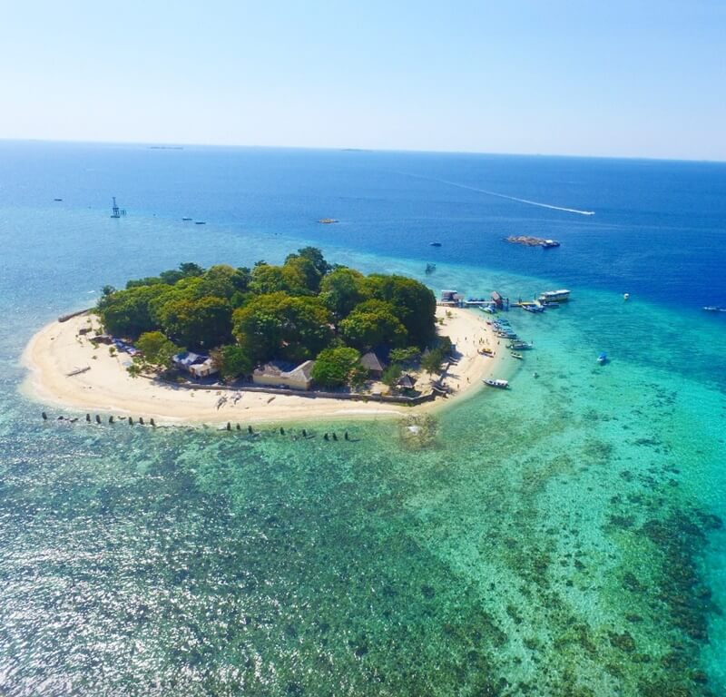

Pulau Samalona adalah salah-satu pulau kebanggaan masyarakat Makassar, Sulawesi Selatan, yang memiliki panorama alam yang cantik, serta dilengkapi dengan berbagai fasilitas penunjang yang memanjakan pengunjung.
Pulau Samalona sangat cocok dijadikan sebagai destinasi wisata keluarga di Makassar. Karena di pulau tersebut ombaknya sangat kecil, bahkan nyaris tak berombak.
Selain itu, di sisi lain juga Pulau Samalona menyajikan suasana tempat wisata di Makassar yang romantis, dan instagramable, khususnya bagi kaum milenial.
Sebelum kita lanjutkan info tentang Pulau Samalona, Makassar, penulis ingin menyampaikan untuk ke sekian kalinya terkait etika kunjungan.
Dari sisi kunjungan wisata, sampah ternyata selalu menjadi musuh utama bagi tempat wisata yang ada dimanapun, termasuk di Pulau Samalona.
Beberapakali dilaksanakan kegiatan bersih-bersih sampah di Pulau Samalona, menandakan bahwa masih banyak pengunjung yang belum memiliki kedewasaan untuk menjaga kelestarian, dan kebersihan alam.
Tetapi di sisi lain, pihak pengelola juga harus memberikan fasilitas tempat sampah yang banyak. Apalagi jika tong sampahnya sedikit dimodifikasi unik, tentu akan menjadi menarik bagi parapengunjung.
Kunjungan wisata ke Pulau Samalona, tentu saja saat ini sangat dipengaruhi oleh kondisi level zonasi penyebaran Covid-19 di Makassar, dan kebijakkan PPKM.
Oleh karena itu, kemanapun, dan dimanapun tempat wisatanya, pengunjung disarankan untuk update terlebih dahulu terkait tempat tujuan wisatanya.